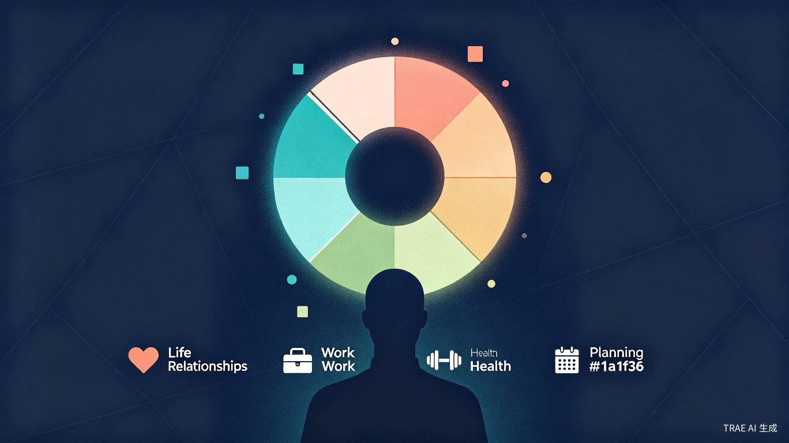
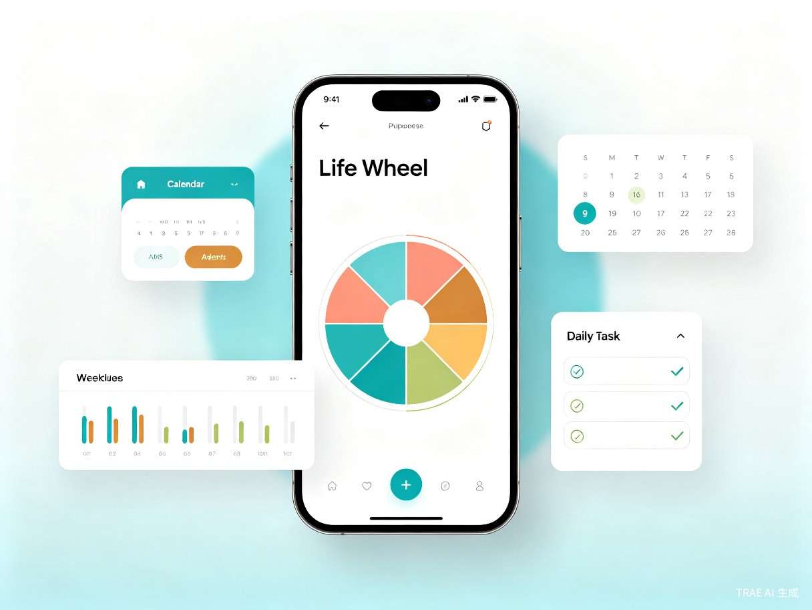

告别次抛目标，让年度计划真正落地
从痛点出发，为追求效率的人群打造一套完整的目标管理闭环
年度目标制定后，大多数人缺乏有效的追踪和可视化手段，导致目标沦为"次抛目标"，无法形成持续的行为驱动力。
作为 Ali 的忠实粉丝，使用 Life Wheel 方法论已有三年。目前的方式是"手写梳理 + Excel录入"，但 Excel 在可视化呈现和移动端查看体验上存在明显短板。
跨平台效率管理应用，支持微信小程序和 H5 网页端。基于"查看频率远高于修改频率"的使用场景，兼顾私有化部署与极致查看体验。

六大模块形成完整的目标管理闭环
9 维度可视化评估（人际关系、工作、健康三大类），一眼识别薄弱环节，支持维度删减和年度对比。
分步引导式评分与愿景填写，每个维度配有参考例子，降低思考成本，让目标设定更轻松。
12 月视图的事件记录与里程碑管理，支持从 Wheel 愿景自动生成年度关键节点。
时间块规划与每周复盘，将年度目标拆解为理想的一周安排，形成可执行的时间模板。
围绕 Wheel 维度拆分具体举措，设置完成状态追踪，让每月都有明确的行动方向。
整合理想周与月度计划，自动生成每日执行清单，勾选完成，形成即时反馈。
直观的图表让目标进展一目了然
面向追求效率的"J人"，解决目标管理中的真实困境
效率提升，让你的年度目标不再是次抛式的
通过 ECharts 雷达图直观展示 9 维度评分，一眼识别薄弱环节，让年度目标从"次抛目标"变为"持续追踪的行动指南"。
Ideal Week + 月度计划 + 今日任务的三层体系，将年度目标拆解为可执行的日常行动，确保目标落地。
移动端随时打开，通勤、碎片时间即可查看目标与差距，形成持续的行为驱动力。
从年度评估到日常执行形成完整闭环，支持历史数据对比，量化个人成长轨迹。
一套代码，多端运行
一套代码编译为微信小程序 + H5 网页版，降低开发和维护成本。
ECharts 雷达图清晰展示 Wheel 维度，支持交互和自定义样式。
微信云开发实现数据多端同步，无需服务器运维。